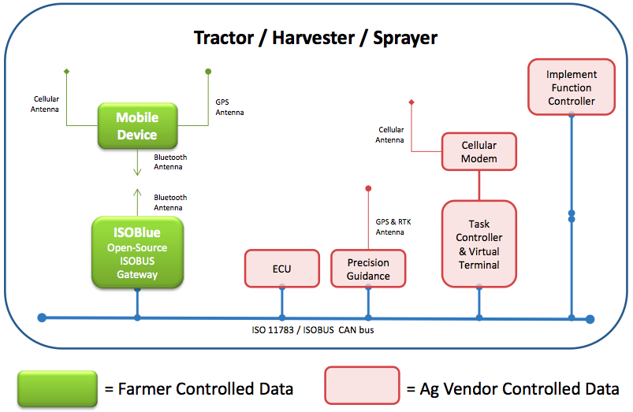
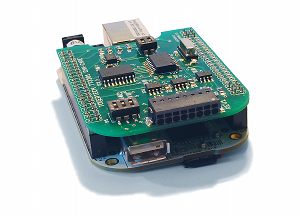
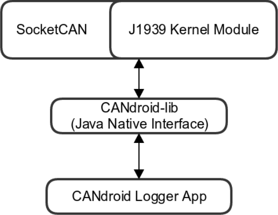
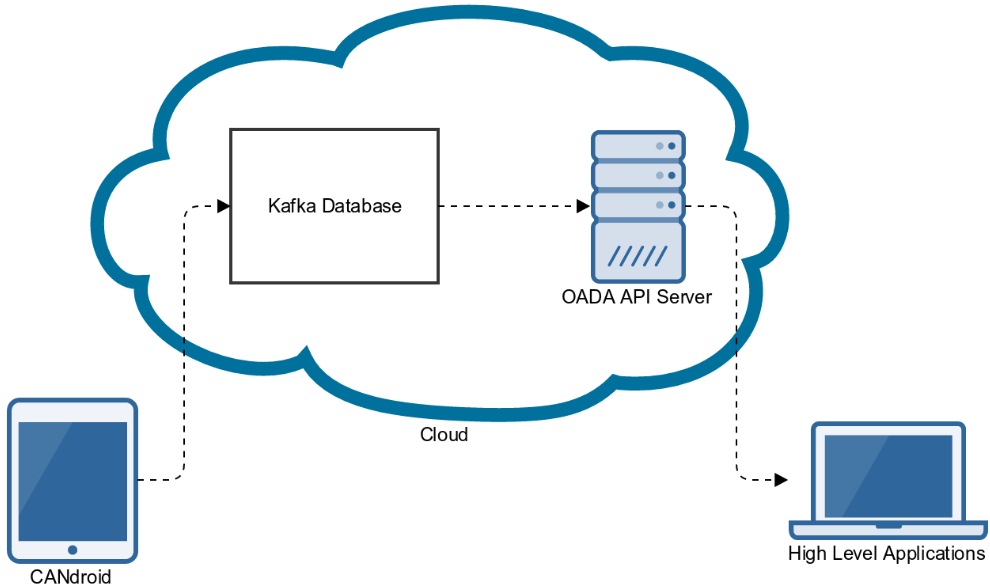
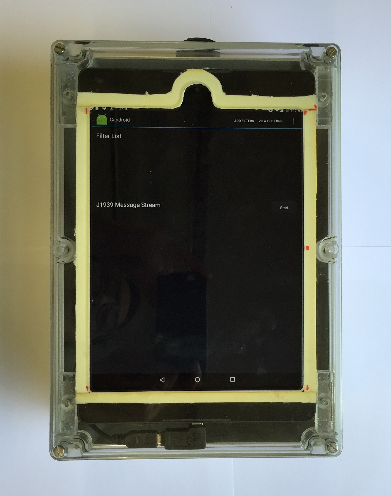
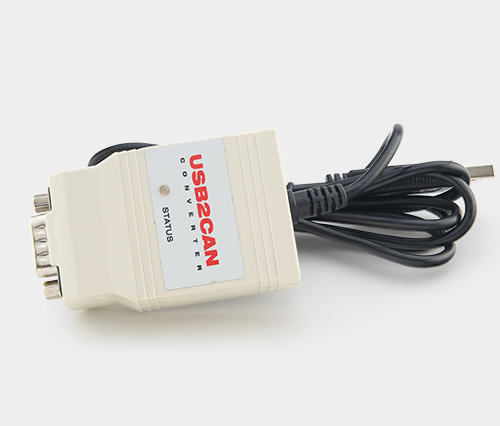
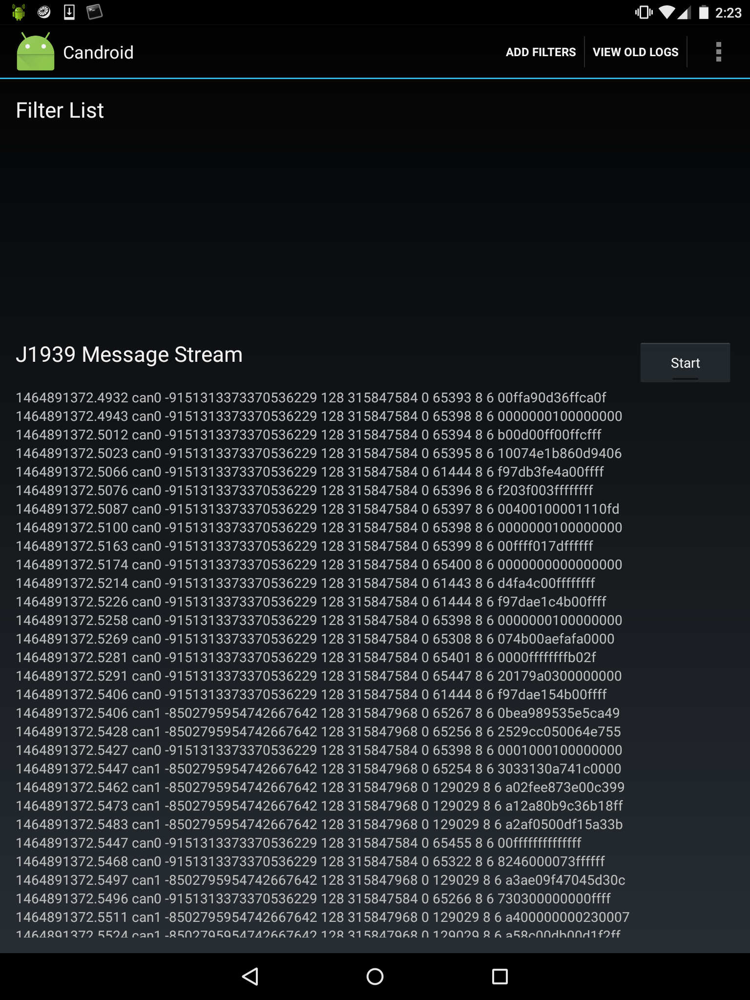

    <!-- Masthead
    ================================================== -->
    <header class="jumbotron subhead" id="intro-overview">
      <div class="row">
        <div class="span7">
          <h1>ISOBlue</h1>
          <p class="lead">Free the data: an open source project to forward ISOBUS messages from tractors over Bluetooth.</p>
  
          <p>We want to get precision agriculture data into the cloud.  We aim to be the best solution for those trying 
          to leverage advanced information technologies to produce more food, more efficiently.  </p>

          <p>
            <a href="mailto:info@isoblue.org">Contact us</a> to find a way to participate,
            get parts to  <a href="#hardware">build your own ISOBlue</a>, then follow the 
            <a href="https://github.com/ISOBlue/isoblue-software/blob/master/tutorial/README.md">Tutorial</a> to get 
            up and running.  You can fork us on <a href="http://github.com/ISOBlue">GitHub</a>,
            follow our progress on <a href="https://trello.com/board/development/5178b60dd148d9e53e008011">Trello</a>,
            and <a href="https://groups.google.com/forum/?fromgroups#!forum/isoblue">join the mailing list</a>.  
          </p>
          <p>
            ISOBlue is part of the <a href="http://openagtoolkit.org">Open Ag ToolKit</a> initiative.
          </p>
        </div>
        <div class="span4 well" style="padding-top: 0px">
          <section id="news">
          <h3>News</h3>
          <div id="news_block">
            {% for post in site.posts limit: 3 %}

                <h5>{{ post.title }}</h5>
                {{ post.excerpt | markdownify | remove: "<p>" | remove: "</p>" }}
                <br />
                <a href="{{ post.url }}">Read more...</a>
            {% endfor %}
          <div>
        </div>
      </div>
    </header>
  
    <!-- Main content -->
    <section id="overview" style="margin-top: 0px; margin-bottom: 0px;">
      <div class="page-header" style="margin-top: 0px; margin-bottom: 0px;">
        <h1>Overview</h1>
        <p>Many pieces of equipment used on modern farming operations share a standardized communications bus,
        known as an ISO11783 bus, or <i>ISOBUS</i>.  It is a standard CAN communications bus operating at
        250 kbps.  The ISO11783 protocol specifies application-layer packet structures which are sent
        via the CAN Link and Physical layers.</p>
    
        <p>Currently, farmers, researchers, entreprenuers, and just about everyone else cannot easily access the massive amounts
        of mineable data that are generated by tractors, the implements they pull, and sensors in agriculture.  
        This is due largely to overly proprietary data collection systems provided by tractor manufacturers.  
        Since these systems on modern tractors generally communicate via a standard ISOBUS architecture, 
        our goal is to <i>free the data</i> by forwarding it straight off the bus wirelessly to devices capable
        of doing useful things with it.</p>
        <p class="text-center">
          <br/>
          Proposed method of retreiving data from existing ISOBUS compliant machines and implements.
        </p>
      </div>
    </section>

    <section id="progress">
      <div class="page-header">
        <div id="blog_block" class="row">
            <h1 style="margin-bottom: 0px; padding-bottom: 0px;">Progress</h1>
            {% for post in site.posts limit: 4 %}
                <h3>{{post.title}}</h3>
                {{post.date | date: "%B %-d, %Y" }} 
                {{post.content}}
                <a href="{{site.url}}{{post.url}}">Permalink</a>
                <hr />
            {% endfor %}
            <a href="/posts.html">Older Posts</a>
        </div>
      </div>
    </section>

    <section id="isoblue">
      <div class="page-header">
        <div class="row">
          <h1>ISOBlue</h1> 
          <div class="span8">
            <p> The tutorial to build your own ISOBlue device is here: 
            <a href="https://github.com/ISOBlue/isoblue-software/blob/master/tutorial/README.md">https://github.com/ISOBlue/isoblue-software/blob/master/tutorial/README.md</a>
            </p>
            <p>In an effort to maximize the simplicity of getting your own ISOBlue running, we have limited
            our hardware choices to components that require no soldering, have pre-built open software
            libraries, and are relatively inexpensive.  </p>

            <p>To that end, we have chosen the <a href="http://beagleboard.org/Products/BeagleBone%20Black">Beagle Bone Black</a> as the
            basic foundation for the device.  It's widely available, it's inexpensive ($45), its design is open source, and it
            runs Linux.</p>

            <p>The BBB has expandable modules known as "capes" for many different 
            applications.  They simply plug in to the header pins on each side of the BBB.
            For our purposes, we need a cape that can provide at least two CAN interfaces (an ISOBUS tractor communicates
            over two CAN buses), one for the implement bus
            and one for the tractor bus.  <a href="http://www.towertech.it/en/products/hardware/tt3201-can-cape/">This cape</a> has 3 CAN
            interfaces and works with the <a href="http://en.wikipedia.org/wiki/SocketCAN">socketCAN Linux library</a> on the BBB (79 &euro;, ships
            internationally).  This will get CAN messages into Linux on the BBB once connected to an ISOBUS diagnostic connector.</p>

            <p class="text-center">
              <br/>
              The triple-CAN cape plugged into the top of a BBB.
            </p>

            <p>To support the ISOBUS protocols that run on top of CAN, we are building a <a href="https://github.com/ISOBlue/isoblue-software">socketCAN module</a> that will
            handle address claiming, packet filtering, and provide simple interfaces for dealing with common tasks like assembing multi-packet byte
            streams.  socketCAN runs in the kernel, so communicating over the CAN bus is as simple as writing a normal Linux program that
            opens a socket.</p>

            <p>To get the ISOBUS data from the Linux program which reads from the socket to a mobile device, the BBB needs 
            Bluetooth cape added as well. UPDATE: the previous cape we suggested here seems to be hard to get: ours has been
            on backorder for a couple of months.  A cheaper, simpler solution is a USB-based Bluetooth adapter like this one ($29.99):
            <a href="http://www.smklink.com/products/nano-dongle-bluetooth-v4-0-le-edr">http://www.smklink.com/products/nano-dongle-bluetooth-v4-0-le-edr</a>.
            We're not using the BBB's USB port for anything, so this will save some money over using the cape.
            The program can then write data to the Bluetooth serial connection.  Finally, 
            a simple Android library can be used to take the raw ISOBUS data and store it, forward it to the cloud, 
            process it locally, or do just about anything you want with it.</p>

            <p>In order to convert from the wide range of voltages that can appear on the power pins of the diagnostic connector,
            we're going to need a power supply.  <a href="http://www.digikey.com/product-detail/en/VYB10W-Q24-S5-T/102-2306-ND/2690083">This one</a>
            is a little pricey ($38) because it's isolated, but is the best option we could find to date.</p>

           <p>The current parts list is <a href="https://trello.com/b/x6hlK62T/development">available on Trello</a>.
         
          </div>
          <div class="span4">
            <br>
            <p class="text-center">The Beagle Bone Black.</p>
          </div>
        </div>
        
      </div>
    </section>

    <section id="candroid">
      <div class="page-header">
        <div class="row">
          <h1>CANdroid</h1> 
          <div class="span8">
						<p>With the idea of ISOBlue, we intend to simplify and stablize the ISOBUS message collection process even more. Hence, we re-developed
						and transformed ISOBlue into CANdroid. It uses a commercially available Android tablet, namely, <a href="http://www.htc.com/us/go/buy-now-nexus-9/">Nexus 9</a>,
						along with two <a href="http://www.8devices.com/products/usb2can">USB2CAN adapters</a> to collect ISOBUS messages.
						The figure below gives a system overview of CANdroid:</p>

            <p class="text-center">
              <br/>
							Overall system connection for CANdroid
            </p>

						<p>There are a couple of reasons for choosing Nexus 9:</p>

						<ul>
							<li>Android is open-source</li>
							<li>Touchscreen is great for data visualization and interaction</li>
							<li>The tablet offers great processing power</li>
							<li>Bluetooth, WiFi and cellular functionalities are already built in</li>
						</ul>

						<p>One of the most critical components of ISOBlue is the ISOBUS kernel module. We developed this Linux kernel module on top of socketCAN
						to handle address claiming, packet filtering, socket configuration for ISOBUS exclusively. It attracted interests in the Linux CAN community.
						(See this post) However, the <a href="https://github.com/kurt-vd/linux/blob/j1939d-v3.15/Documentation/networking/j1939.txt">J1939 kernel module</a>
						seems to be more promising in merging into the main Linux kernel. Hence, we started to utilize this module in our development process.</p>

						<p>Moreover, since Android relies on Java heavily for its app development. It is important to fill the gap in between the low-level kernel module
						and the high level app. <a href="https://github.com/OATS-Group/CANdroid-lib">CANdroid-lib</a>, an open-source Java Native Interface library is
						thus developed for this purpose. The figure below shows how CANdroid-lib enables communication between low-level J1939 kernel module and a high-level
						Android application:</p>

            <p class="text-center">
              <br/>
							A high-level Android app can communicate with kernel modules without kernel programming
            </p>

						<p>Finally, an Android application, <a href="https://github.com/OATS-Group/CANdroid-app">CANdroid-app</a> is written
					 	for initiating the ISOBUS message collection and handling data uploading to the Cloud.</p>

						<p>This <a href="https://github.com/OATS-Group/CANdroid">page</a> gives a brief tutorial on the process of making a CANdroid.</p>

						<p>In addition to CANdroid, we are currently setting up a data uploading and processing architecture that enables us to explore
						an efficient and scalable way to handle high volume machine data. The architecture is referred as the
						<a href="http://milinda.pathirage.org/kappa-architecture.com/">>Kappa Archiecture</a>. In short, this architecture treats data as
						streams to encourage a continuous flow of data. We put CANdroid as the starting point of the data stream. It initiates the ISOBUS data collection
						process and uploads the collected data to a stream based data processing system called
						<a href="http://kafka.apache.org/">Kafka database</a>. After the database processed the ISOBUS data, it then forwards the data to
						a <a href="https://github.com/OADA/oada-api-server">OADA API server</a> which is an implementation of the
						<a href="http://openag.io/">Open Agricultural Data Alliance formats and API</a>. The figure below shows CANdroid's integration within the Kappa Architecture:</p>

            <p class="text-center">
              <br/>
							The Kappa Architecture
            </p>

						<p>This architecture is still under testing and there will be a lot more updates.</p>

					</div>

						<div class="span4">
							<br>
							<p class="text-center">CANdroid enclosure</p>
							<br>
							<p class="text-center">8devices USB2CAN adapter</p>
							<br>
							<p class="text-center">Screenshot of CANdroid logger during data collection process</p>
						</div>

        </div>
      </div>
    </section>

    <section id="documentation">
      <div class="page-header">
        <h1>Documentation</h1>
        <p>To start, <a href="#hardware">get some hardware</a>, then follow the <a href="https://github.com/ISOBlue/isoblue-software/blob/master/tutorial/README.md">tutorial</a>
        to get things running.</p>
        <p>There are several functional specifications.  If you are
        unfamiliar with functional specs, <a href="http://www.joelonsoftware.com/articles/fog0000000036.html">Joel Spolsky</a> is the best person to explain it.
        <ul>
          <li><a href="https://docs.google.com/document/d/1e1Zwh11J8NgPeUelKOSSEOov4fEM4cdEqaN1leu4hYU/edit?usp=sharing">Overall Functional Specs</a></li>
          <li><a href="https://docs.google.com/document/d/1e1Zwh11J8NgPeUelKOSSEOov4fEM4cdEqaN1leu4hYU/edit?usp=sharing">Packet Filter Functional Specs</a></li>
        </ul></p>
        <p>For an enclosure, we're currently waiting for revision 2 to come back from the printers.  Look for pictures and 3D printing files here soon.</p>

      </div>
    </section>

    <section id="sponsors">
      <div class="page-header">
        <h1>Sponsors</h1>
        We couldn't do this without the generous support of our sponsors.  A special thanks to all who
        have contributed, including:
        <div class="container">
          <div class="span4 well">
            <a href="http://farmlogs.com/"></a><br/>
            <center>Website: <a href="http://farmlogs.com">http://farmlogs.com</a></center>
          </div>
          <div class="span4 well">
            <center><a href="http://www.purdue.edu/"></a><br/>
            Website: <a href="http://www.purdue.edu">http://www.purdue.edu</a></center>
          </div>
          <div class="span4">
          </div>
        </div>
      </div>
    </section>

    <section id="Contacts">
      <div class="page-header">
        <h1>Contacts</h1>
        <div class="container">
          <span class="span3">
            <address>
              <strong>Aaron Ault</strong><br/>
              School of Electrical and Computer Engineering<br/>
              Purdue University<br/>
              <a href="mailto:info@isoblue.org">info@isoblue.org</a>
            </address>
          </span>
          <span class="span4">
            <address>
              <strong>Prof. James V. Krogmeier</strong><br/>
              School of Electrical and Computer Engineering <br/>
              Purdue University<br/>
            </address>
          </span>
          <span class="span4">
            <address>
              <strong>Prof. Dennis Buckmaster</strong><br/>
              School of Agricultural and Biological Engineering <br/>
              Purdue University<br/>
            </address>
          </span>

        </div>
      </div>
    </section>
